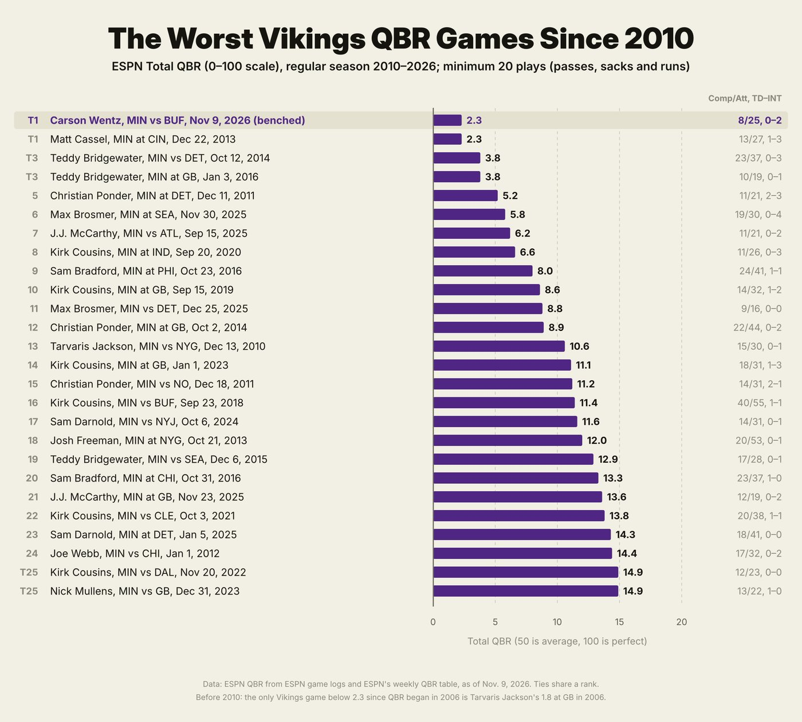

Forecasts,
data & automation.
I'm Nick, a financial and data analyst in Minneapolis. I build the forecasts and models leaders plan with, and the data and automation that keep them current.
Things you can open and try
Revenue forecast planner
Three scenarios and a capacity check that update as you move the inputs. Made-up data.
Shows: scenario modeling, capacity planningOpen the planner →Quality dashboard
Remake rate by product, month and reason, with a Pareto chart and a target line. Sample data.
Shows: KPI design, root-cause analysisOpen the dashboard →Job alert tool
Checks company job boards every hour, keeps only new matching postings and sends alerts.
Shows: APIs, scheduling, tests, AI scoringRead the write-up →
Worst Vikings QBR games since 2010
A ranked chart built from ESPN game logs, made the week it happened.
Shows: data sourcing, chart designSee the chart →Complex topics, explained with charts
How I use AI every day
The tools, Claude skills and habits behind how I work, build and learn, with the workflows laid out step by step.
Read the post →Oil, the 10-year, and the day the most reliable trade of 2026 stopped working
Why oil and Treasury yields moved in lockstep through September, then split in October, and how to read the two every morning.
Read the deep dive →Planning numbers, the data under them, and the automation that keeps them current
Forecasting and FP&A
Revenue forecasts, growth scenarios and capacity plans. Monthly reviews of actuals against forecast, and resetting assumptions when costs or volume move.
Data and BI
Reporting databases that join finance, sales and operations data, nightly ETL, and dashboards people actually open.
Automation and AI
Python pipelines that turn recurring reports into scheduled jobs, internal web apps, and Claude agent workflows for repeat analysis.
Analyst, builder, physics major
Most recently I was the Decision Support Analyst at Partners Dental Solutions, an orthodontic lab in Chanhassen, where I worked on revenue forecasting, capacity planning, product-mix modeling and automated reporting. I moved up from the production floor, so I know how the numbers I report get made.
Before that I spent three years as a trading analyst in capital markets at Finance of America, building loan-level bid models and DCF and IRR models. I studied physics and computer science at Augsburg University, where I built data pipelines for space physics research and co-authored a paper in the Journal of Geophysical Research.
I like problems that are part puzzle and part plumbing: find the pattern, then automate it so nobody has to do it by hand again. Outside work I build things for myself too, like a Python pipeline that prints a personal newspaper each morning and a triathlon training dashboard.
- Based in
- Minneapolis, MN
- Looking for
- FP&A, financial analyst, BI analyst
- Work setup
- Twin Cities or remote
- Tools
- Excel, SQL, Python, BI
- Education
- B.S. Physics & CS, Augsburg
Let's talk.
Message me on LinkedIn or copy my email. I'm always up for a conversation about forecasting, finance and automation.